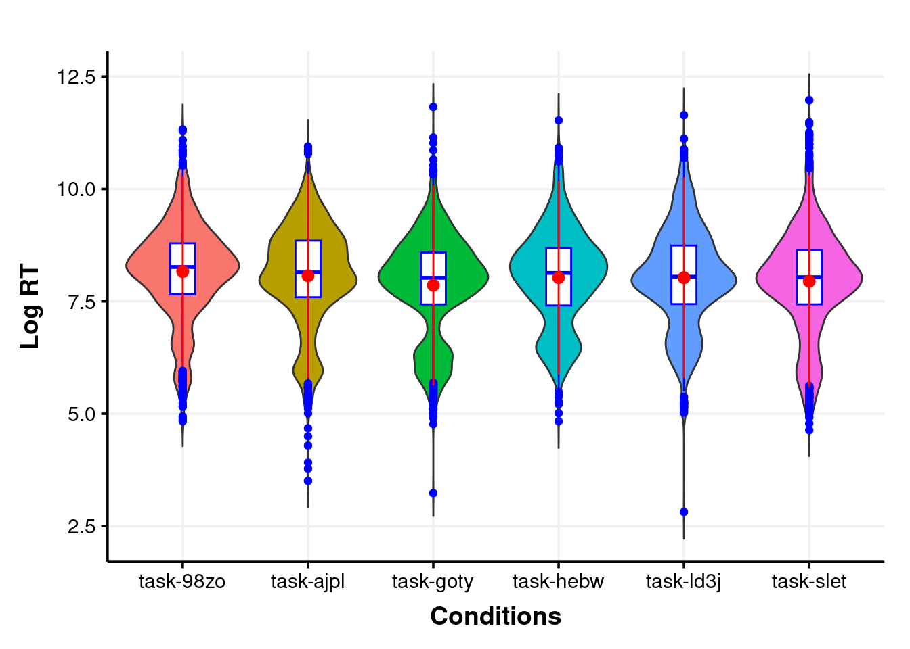
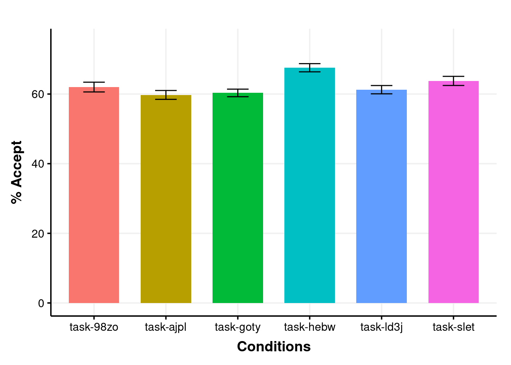

Code
library(tidyverse)
library("plotrix")
library(lme4)
library(lmerTest)
source('ggplot_theme_Publication-2.R')Behavioural analysis
Analysis based on Persons experiment: Middleton and Moitra 2023
library(tidyverse)
library("plotrix")
library(lme4)
library(lmerTest)
source('ggplot_theme_Publication-2.R')# Load data
df_slet <- read_csv("data/slet.csv")
df_98zo <- read_csv("data/98zo.csv")
df_goty <- read_csv("data/goty.csv")
df_hebw <- read_csv("data/hebw.csv")
df_ajpl <- read_csv("data/ajpl.csv")
df_ld3j <- read_csv("data/ld3j.csv")
# Custom Function
data_cleaning <- function(arg1){
arg1 <- arg1 %>%
select(`Participant Private ID`,`Trial Number`,'Tree Node Key', 'Reaction Time', Correct,`Spreadsheet: display`,Screen, `Task Name`,`Response Type`) %>%
rename(Subject = `Participant Private ID`,
Item = `Trial Number`,
Condition = 'Tree Node Key',
RT = 'Reaction Time',
Accuracy = Correct) %>%
filter(Screen == "Testing",
`Response Type` == "response") %>%
mutate(LogRT = log(RT))
return(arg1)
}
## Use the custom function to clean the data
df_slet <- data_cleaning(df_slet)
df_98zo <- data_cleaning(df_98zo)
df_goty <- data_cleaning(df_goty)
df_hebw <- data_cleaning(df_hebw)
df_ajpl <- data_cleaning(df_ajpl)
df_ld3j <- data_cleaning(df_ld3j)
data <- rbind(df_slet,df_98zo,df_goty,df_hebw,df_ajpl,df_ld3j)
## Create the summary
data_group <- data %>% group_by(Condition) %>% summarise(RT_mean=mean(RT),RT_SE=std.error(RT), ACC=mean(Accuracy)*100, ACC_SE=std.error(Accuracy)*100)
Data <- data
summary(Data) Subject Item Condition RT
Min. : 9990861 Min. : 1.00 Length:9312 Min. : 16.68
1st Qu.: 9991692 1st Qu.:12.75 Class :character 1st Qu.: 1782.22
Median : 9993016 Median :24.50 Mode :character Median : 3284.95
Mean : 9994674 Mean :24.50 Mean : 5284.54
3rd Qu.: 9995130 3rd Qu.:36.25 3rd Qu.: 6076.70
Max. :10006213 Max. :48.00 Max. :158673.60
Accuracy Spreadsheet: display Screen Task Name
Min. :0.0000 Length:9312 Length:9312 Length:9312
1st Qu.:0.0000 Class :character Class :character Class :character
Median :1.0000 Mode :character Mode :character Mode :character
Mean :0.6234
3rd Qu.:1.0000
Max. :1.0000
Response Type LogRT
Length:9312 Min. : 2.814
Class :character 1st Qu.: 7.486
Mode :character Median : 8.097
Mean : 8.003
3rd Qu.: 8.712
Max. :11.975 #Stats
HP_data <- data %>%
mutate(
Subject = as.factor(Subject),
Condition = as.factor(Condition),
Item = as.factor(Item)
#Cond_Type = as.factor(Cond_Type),
#Response = as.factor(Response)
)
str(HP_data)tibble [9,312 × 10] (S3: tbl_df/tbl/data.frame)
$ Subject : Factor w/ 194 levels "9990861","9990870",..: 7 7 7 7 7 7 7 7 7 7 ...
$ Item : Factor w/ 48 levels "1","2","3","4",..: 1 2 3 4 5 6 7 8 9 10 ...
$ Condition : Factor w/ 6 levels "task-98zo","task-ajpl",..: 6 6 6 6 6 6 6 6 6 6 ...
$ RT : num [1:9312] 6311 4171 5421 2202 3117 ...
$ Accuracy : num [1:9312] 1 1 0 1 0 0 1 0 1 1 ...
$ Spreadsheet: display: chr [1:9312] "Testing02" "Testing02" "Testing02" "Testing02" ...
$ Screen : chr [1:9312] "Testing" "Testing" "Testing" "Testing" ...
$ Task Name : chr [1:9312] "1e-1i B Testing" "1e-1i B Testing" "1e-1i B Testing" "1e-1i B Testing" ...
$ Response Type : chr [1:9312] "response" "response" "response" "response" ...
$ LogRT : num [1:9312] 8.75 8.34 8.6 7.7 8.04 ...RT_model_1 <- lmer(LogRT ~ Condition + (1|Subject) + (1|Item), data = HP_data, REML = F)
summary(RT_model_1)Linear mixed model fit by maximum likelihood . t-tests use Satterthwaite's
method [lmerModLmerTest]
Formula: LogRT ~ Condition + (1 | Subject) + (1 | Item)
Data: HP_data
AIC BIC logLik deviance df.resid
18477.3 18541.6 -9229.7 18459.3 9303
Scaled residuals:
Min 1Q Median 3Q Max
-9.3539 -0.5666 -0.0603 0.5101 7.2527
Random effects:
Groups Name Variance Std.Dev.
Subject (Intercept) 0.7311 0.8550
Item (Intercept) 0.1329 0.3646
Residual 0.3785 0.6152
Number of obs: 9312, groups: Subject, 194; Item, 48
Fixed effects:
Estimate Std. Error df t value Pr(>|t|)
(Intercept) 8.16355 0.17980 223.40772 45.405 <2e-16 ***
Conditiontask-ajpl -0.09513 0.23107 193.82226 -0.412 0.681
Conditiontask-goty -0.30508 0.21714 193.82226 -1.405 0.162
Conditiontask-hebw -0.13665 0.22793 193.82226 -0.600 0.550
Conditiontask-ld3j -0.13727 0.22510 193.82226 -0.610 0.543
Conditiontask-slet -0.21564 0.23653 193.82226 -0.912 0.363
---
Signif. codes: 0 '***' 0.001 '**' 0.01 '*' 0.05 '.' 0.1 ' ' 1
Correlation of Fixed Effects:
(Intr) Cndtntsk-j Cndtntsk-g Cndtntsk-h Cndt-3
Cndtntsk-jp -0.711
Cndtntsk-gt -0.757 0.589
Cndtntsk-hb -0.721 0.561 0.597
Cndtntsk-l3 -0.730 0.568 0.605 0.576
Cndtntsk-sl -0.695 0.541 0.575 0.548 0.555ACC_model_1 <- glmer(Accuracy ~ Condition + (1|Subject) + (1|Item), data = HP_data, family = "binomial")
summary(ACC_model_1)Generalized linear mixed model fit by maximum likelihood (Laplace
Approximation) [glmerMod]
Family: binomial ( logit )
Formula: Accuracy ~ Condition + (1 | Subject) + (1 | Item)
Data: HP_data
AIC BIC logLik deviance df.resid
11865.4 11922.5 -5924.7 11849.4 9304
Scaled residuals:
Min 1Q Median 3Q Max
-2.9271 -1.0388 0.5484 0.7958 1.5719
Random effects:
Groups Name Variance Std.Dev.
Subject (Intercept) 0.450357 0.67109
Item (Intercept) 0.003344 0.05783
Number of obs: 9312, groups: Subject, 194; Item, 48
Fixed effects:
Estimate Std. Error z value Pr(>|z|)
(Intercept) 0.53957 0.14840 3.636 0.000277 ***
Conditiontask-ajpl -0.06980 0.19937 -0.350 0.726260
Conditiontask-goty -0.06935 0.18708 -0.371 0.710864
Conditiontask-hebw 0.25970 0.19698 1.318 0.187357
Conditiontask-ld3j -0.02677 0.19406 -0.138 0.890265
Conditiontask-slet 0.09419 0.20419 0.461 0.644607
---
Signif. codes: 0 '***' 0.001 '**' 0.01 '*' 0.05 '.' 0.1 ' ' 1
Correlation of Fixed Effects:
(Intr) Cndtntsk-j Cndtntsk-g Cndtntsk-h Cndt-3
Cndtntsk-jp -0.742
Cndtntsk-gt -0.790 0.589
Cndtntsk-hb -0.751 0.559 0.596
Cndtntsk-l3 -0.762 0.567 0.605 0.574
Cndtntsk-sl -0.724 0.539 0.575 0.546 0.554Data$Condition <- as.factor(Data$Condition)
RT <- ggplot(Data, aes(x=Condition, y=LogRT)) +
geom_violin(aes(fill = Condition), trim = FALSE,show.legend = FALSE) +
ylab("Log RT") +
xlab("Conditions") +
# geom_signif(
# comparisons = list(c("Grammatical", "Pseudowords")),
# margin_top = 0.20,
# step_increase = 0.05,
# tip_length = 0.01,
# map_signif_level = TRUE
# )+
theme_Publication()+
# Add geom_boxplot() to include box plot
geom_boxplot(width = 0.2, fill = "white", color = "blue")
RT + stat_summary(fun.data=mean_sdl, mult=1,
geom="pointrange", color="red")
ACC_plot<- ggplot(data_group,
aes(x=Condition,y=ACC,fill=Condition)) +
# geom_bar function is used to plot bars of barplot
geom_bar(stat = "identity", width = 0.7, position = position_dodge(0.7), show.legend = FALSE )+
#scale_x_discrete(limits = Conditions) + facet_wrap( ~Prefix) +
ylab("% Accept") +
xlab("Conditions") +
theme_Publication()+
coord_cartesian(ylim = c(0, 75)) +
# scale_y_continuous(expand = expansion(mult = c(0, 0.05)))+
# geom_signif(
# comparisons = list(c("Grammatical", "Pseudowords")),
# margin_top = 0.12,
# step_increase = 0.09,
# tip_length = 0.05,
# annotation = c("***")
# )+
#geom_errorbar function is used to plot error bars
geom_errorbar(aes(ymin=ACC-ACC_SE,
ymax=ACC+ACC_SE,
width=0.3))ACC_plot